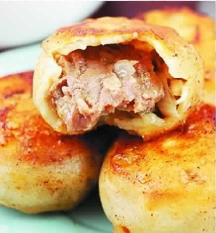
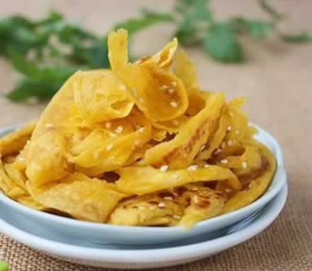

助力分娩的小零食有哪些？
预产期马上就要到了，准妈妈们此时此刻怀着激动和忐忑的心情，等待着宝宝的“随时发动”。同时，许多妈妈在准备好待产包的同时，准备好助产的“给力”小零食了吗？分娩可不是一件轻松的事。初次分娩一般经历12～18小时，其间的每一次宫缩与娩出发力，都需要消耗极大的体力，这些消耗的能量必须在分娩过程中适时给予补充，才能适应顺利分娩的需要。所以，不妨带一些小零食进医院待产哦，在阵痛的间歇快速地吃一点高热量的小零食，妈妈们会更有力气分娩。那么，分娩前应给产妇准备点什么零食好呢？
首先，向妈妈们推荐被誉为“分娩佳食”的巧克力。巧克力含有丰富的营养素，每100克巧克力中含糖类，可迅速被身体吸收利用，比鸡蛋营养吸收快得多。巧克力体积小能量多，更可方便地帮助妈妈们增加力气。此外，小糕点、适量的水果或者妈妈们想吃的食品，都是不错的选择，总之，建议顺产的妈妈们备好一些高热量的食物，好有力气生宝宝哦！
本周推荐尝试食谱1：
门丁肉饼
推荐理由：焦黄的面皮、鲜美的肉馅、香浓的汤汁，老北京名小吃门钉肉饼让妈妈感受美妙味觉。
食谱原料：
面粉1斤，牛肉馅300克，葱、姜、盐、鸡粉、老抽、料酒、香油、花椒各适量；
制作方法：
1、花椒用开水浸泡约20分钟，捞去花椒，留花椒水备用；
2、面粉加凉水和成稍硬的面团，然后用手蘸少许凉水淋在面团上，攥紧拳头用力压面团，待水分被面团吸收，再蘸水淋在面团上，继续用拳头用力压面团。反复3-4次，待面团光滑筋道，盖上保鲜膜放置一旁醒发20分钟；
3、葱切碎，姜切末；
4、牛肉馅中加入料酒、少许老抽、盐、鸡粉、香油、姜末搅拌均匀，分次加入花椒水，顺一个方向用力搅拌，使肉馅上劲；
5、将面团取出按揉几下，分割成比饺子剂子略大的剂子，擀成中间厚、边缘薄的面皮，先放葱花在面皮中央，然后放适量肉馅，像包包子一样包紧，收口向下，用双手将其轻轻搓成高约3厘米的圆柱形；
6、平底锅中倒少量油，烧热后放入肉饼坯子，用中小火煎至一面金黄翻面，盖上锅盖，待两面金黄即可出锅。
本周推荐尝试食谱2：
奶香南瓜手抓饼
推荐理由：奶香味道的南瓜手抓饼好吃又富含营养哦，独特的香味会增强食欲，不妨试试看！
食谱原料：
小麦面粉300克，南瓜 260克，白芝麻、奶油、色拉油、白糖。
制作方法：
1、南瓜去皮去瓤后切成片，放入蒸锅中隔水蒸熟或是放入微波炉中叮熟后捣成泥，依个人口味加入适量的白糖，拌匀。
2、再加入面粉，用筷子将其拌匀后再用手揉成面团，盖上保鲜膜或湿润的纱布让其饧20分钟。
3、将饧好的面团揉搓成长条，再分成约50克重的小剂子。
4、将小剂子按扁，再用擀面杖擀成约0.2厘米厚的长方形面皮。
5、在擀好的面皮上刷上一层融化的奶油，再撒上熟芝麻。
6、将面皮沿长边抓叠成长条状，由一头开始将其盘卷起来，再用擀面杖将其擀成约0.3厘米厚的圆饼。
7、平底锅用小火加热，再刷上少许的油，下入饼胚，小火将其烙黄一面后翻面，最后烙至两面金黄熟透后用筷子将其趁热掀松即可。